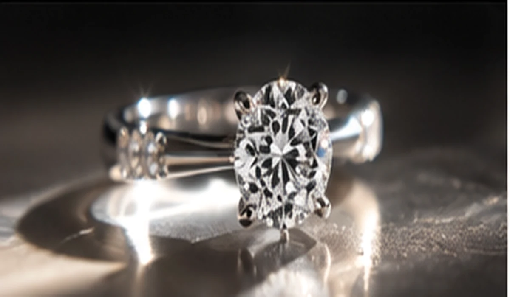
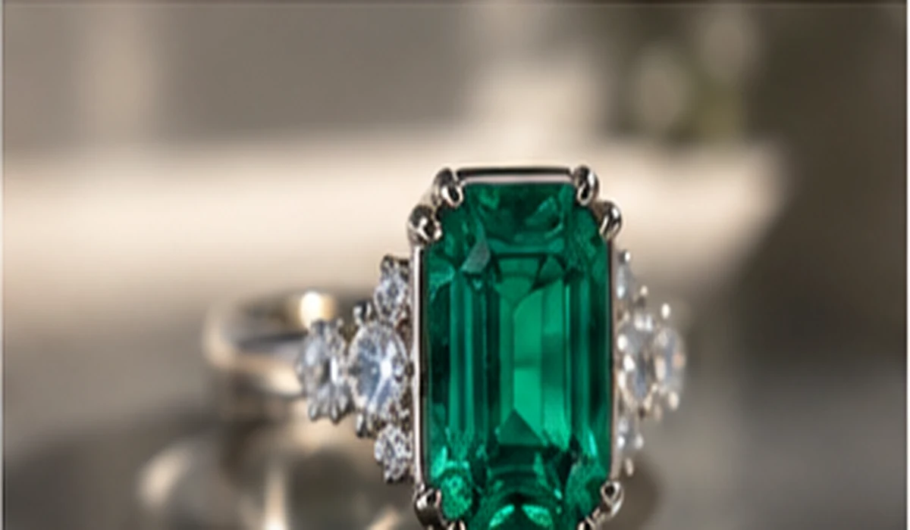
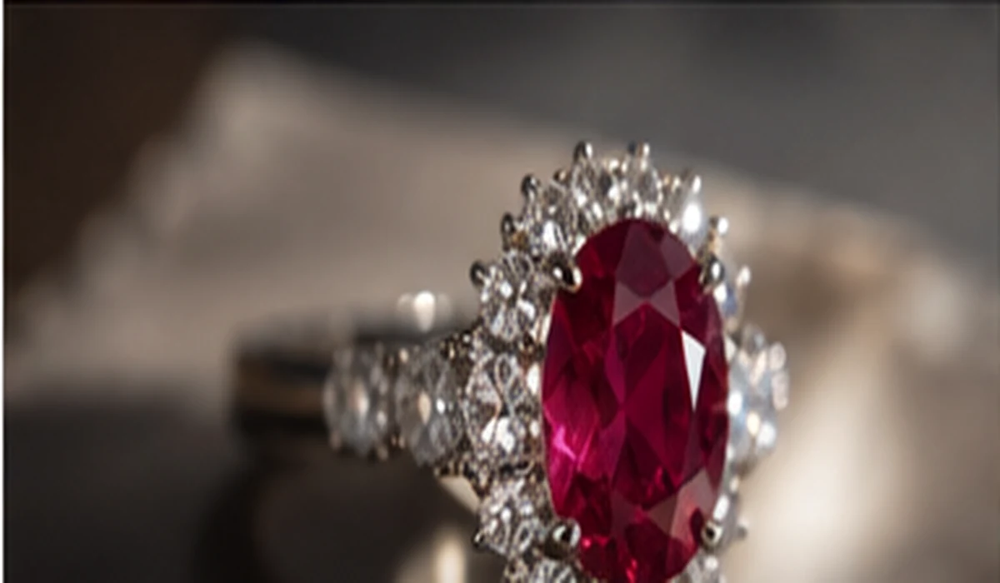
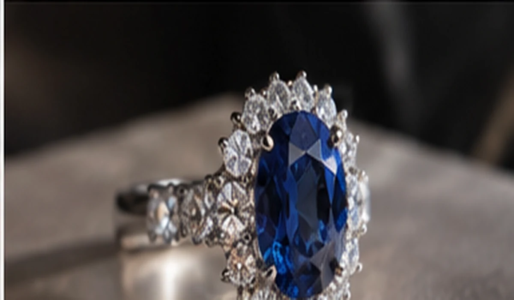
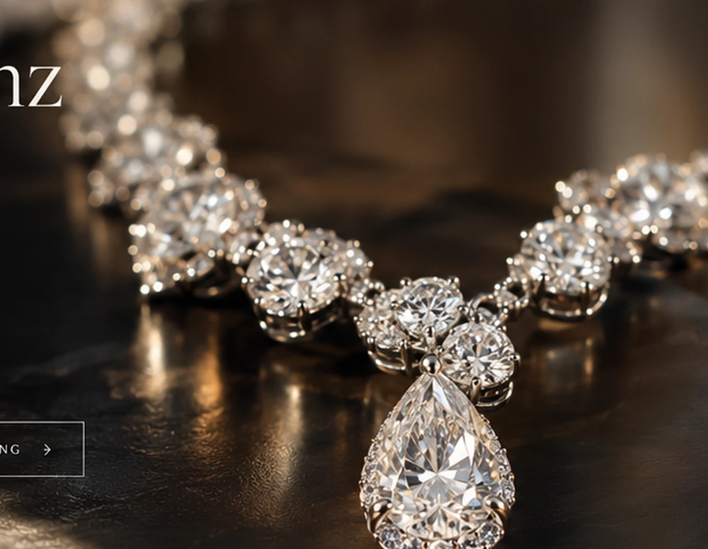
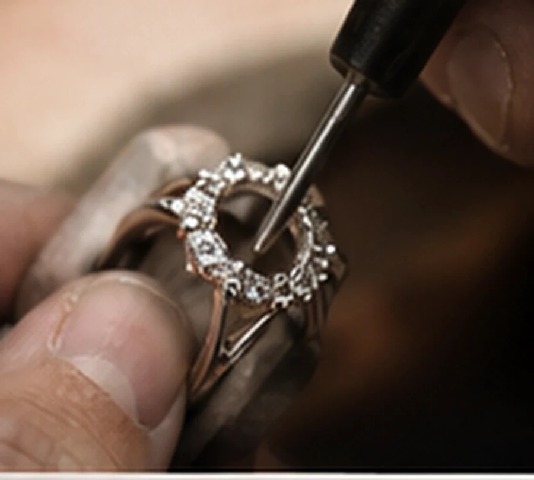
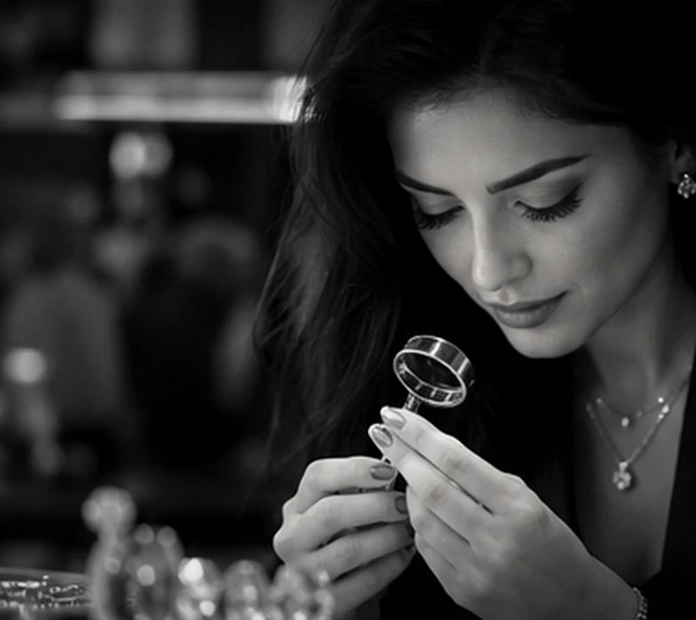

01
Diamanten
Brillanz, Reinheit und außergewöhnliches Feuer.
Fine Jewelry · Hamburg
Ausgewählte Diamanten und Farbedelsteine. In Gold oder Platin gefasst – als fertige Kreation oder als persönliches Unikat, begleitet von Mariam.
Mehr als Schmuck
Jeder Diamant und jeder Farbedelstein bringt eine eigene Farbe, Tiefe und Persönlichkeit mit. Unsere Aufgabe ist es, genau diese Besonderheit sichtbar zu machen.
Mariam begleitet Sie von der ersten Idee über die Auswahl des Steins bis zu einem Schmuckstück, das sich selbstverständlich anfühlt – und trotzdem unverwechselbar ist.
Ausgewählte Kreationen
Von klassischer Brillanz bis zu intensiver Farbe: Entdecken Sie Schmuckstücke, die sich am Charakter des jeweiligen Edelsteins orientieren.

Brillanz, Reinheit und außergewöhnliches Feuer.

Tiefes Grün. Unverwechselbare Präsenz.

Intensität in ihrer schönsten Form.

Tiefe Farbe – klassisch und modern zugleich.
Die Entstehung eines Schmuckstücks
Scrollen Sie durch die Kette. Die Ansicht beginnt mitten im Schliff eines einzelnen Diamanten und zieht sich Schritt für Schritt zurück, bis das gesamte Collier sichtbar wird.
Der Schliff
Facetten bestimmen, wie ein Diamant Licht aufnimmt und zurückgibt. Proportion, Symmetrie und Politur entscheiden darüber, ob aus Helligkeit echte Brillanz wird.
Die Fassung
Die Fassung schützt den Stein – ohne ihm die Bühne zu nehmen. Krappen, Abstände und Höhe werden so abgestimmt, dass Licht, Sicherheit und Tragegefühl zusammenpassen.
Die Komposition
Größe, Schliff und Abstand folgen einer klaren Linie. Erst im Zusammenspiel entsteht eine Kette, die am Hals ruhig wirkt und bei jeder Bewegung lebendig bleibt.
Das Gesamtstück
Am Ende steht nicht nur eine Summe wertvoller Materialien, sondern ein Schmuckstück mit eigener Haltung – ausgewählt, proportioniert und gefertigt für seine Trägerin.
Mit Mariam besprechenDas Ergebnis
Die Inszenierung zeigt den Weg vom Detail zum Ganzen. In einer persönlichen Beratung geht der Weg umgekehrt: Wir beginnen mit Ihrer Geschichte und entwickeln daraus Material, Stein und Form.

Der Stein zuerst
Diamanten, Smaragde, Rubine und Saphire unterscheiden sich nicht nur in Farbe und Schliff. Proportion, Licht und Charakter bestimmen, welcher Stein zu einem Entwurf passt.
Individuelle Anfertigung
Ein Verlobungsring, ein Jubiläum, ein Erbstück mit neuer Bedeutung oder ein Entwurf, den es genau so noch nicht gibt: Jede Anfertigung beginnt mit einem persönlichen Gespräch.
Projekt mit Mariam besprechen
Vom ausgewählten Stein bis zur finalen Fassung.
Der Weg zum Unikat
Wünsche, Anlass, Stil und Budget werden gemeinsam eingeordnet.
Wir wählen passende Diamanten oder Farbedelsteine für den Entwurf aus.
Material, Proportionen und Fassung werden zu einem stimmigen Schmuckstück.
Nach finaler Qualitätsprüfung wird das fertige Stück persönlich übergeben.

Persönlich beraten
Bei MARIAM ÉCLAT steht Mariam persönlich für die Beratung und die Idee hinter jedem Stück. Im Mittelpunkt stehen ehrliche Empfehlungen, ausgewählte Materialien und ein Ergebnis, das zur Person passt – nicht nur zum Anlass.
Termin anfragenPersönliche Beratung
Erzählen Sie Mariam kurz von Ihrer Idee. Für eine erste Anfrage genügen Anlass, Wunsch und eine grobe Budgetvorstellung – wenn Sie diese bereits haben.
E-Mailvor Livegang eintragen
Telefonvor Livegang eintragen
AtelierAdresse vor Livegang eintragen